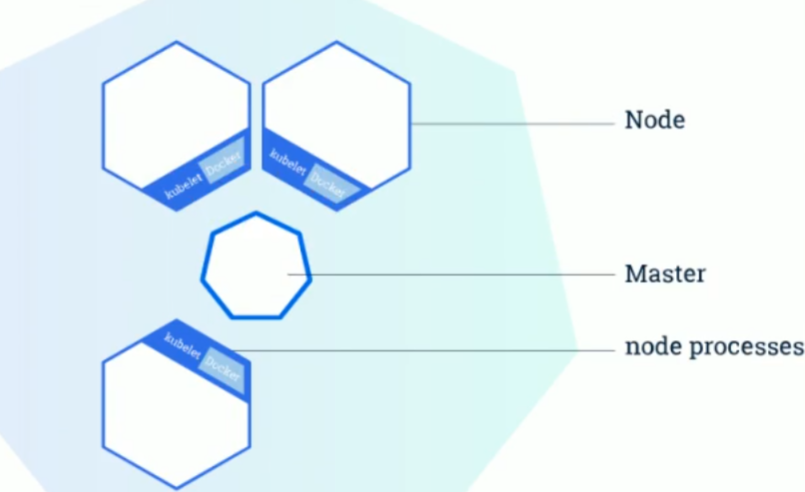
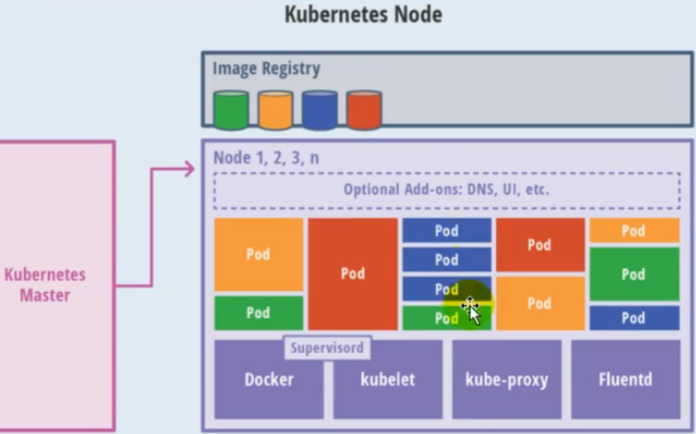
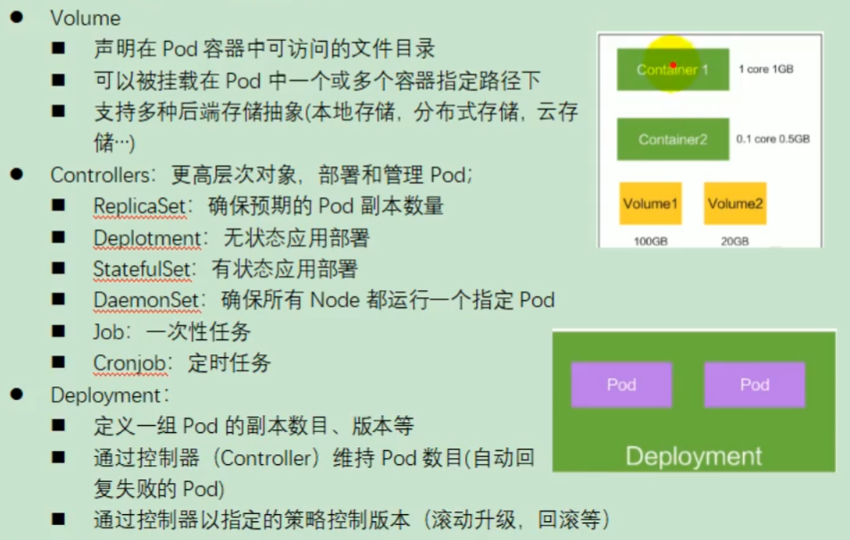
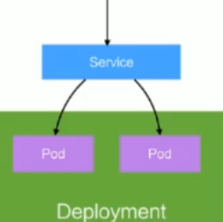

微服務商城之高可用集群篇
SpringBoot微服務項目筆記-25
高可用集群篇
- 微服務做到現在，終於要開始部署了，首先要認識Kubernetes(K8S)
- 之前也有稍微了解過K8S，見筆記 https://yoziming.github.io/post/211006-k8s/
- 簡單來說就是用來管理doker的總控

Master

- API Server: API介面
- etcd: K-V形式的消息隊列
- Scheduler: 監視Pod、調度叢集
- kube-controller-manager: 操作進程的管理員
- 節點控制器（Node Controller）: 負責在節點出現故障時進行通知和回應
- 任務控制器（Job controller）: 監測代表一次性任務的 Job 物件，然後創建 Pods 來運行這些任務直至完成
- 端點控制器（Endpoints Controller）: 填充端點(Endpoints)對象(即加入 Service 與 Pod)
- 服務帳戶和權杖控制器（Service Account & Token Controllers）: 為新的命名空間創建默認帳戶和 API 訪問權杖
Noede

- Container Runtime: 正常就是Docker，負責運行容器
- kubelet: 工頭，每個節點的負責人，管理Pod
- kube-proxy: 節點的網路接口，負責通訊
- Fluentd: 日誌
Pod
- K8s管理的最小單元
- 裡面可以有多個容器，共用一個網路位置
其他名詞
- Controllers: Pod的高層抽象，用來實際執行部署

- Service: 也是抽象，Pod組成的一個服務

- Namespace: 邏輯隔離資源
暫時停下
- 要運行K8S對資源的要求(主要是ram)太狠了，我的小破電腦已經扛不住了
- 課程只好暫時先停在這，整理一下手邊的資源，先去準備工作的事
上次修改於 2022-02-13